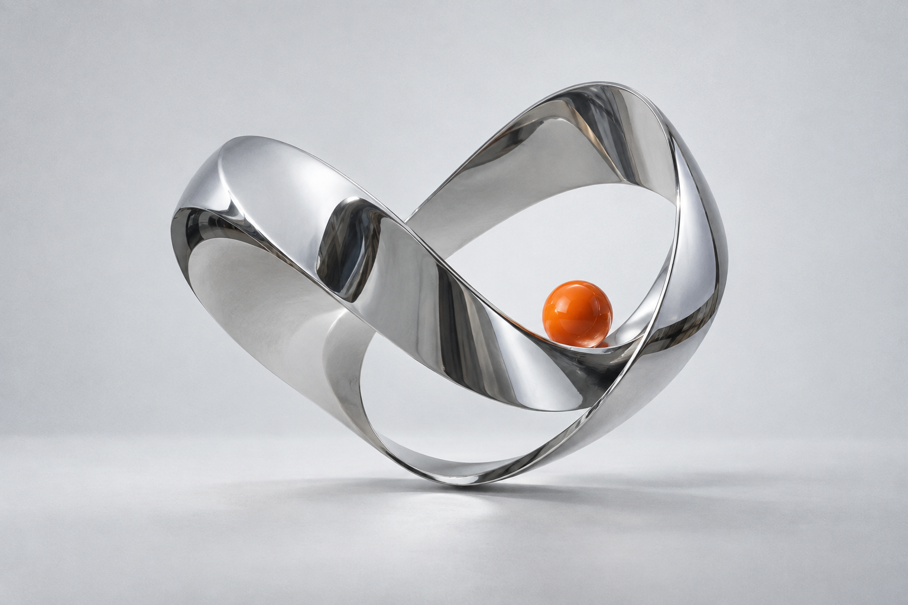

CONCEPT SAMPLE / 01
대표작이 들어갈 자리. 이미지와 핵심 설명을 함께 보여줍니다.
작품 설명 구성 보기
무엇을 만들었나요?
실제 작품의 목표와 결과를 짧게 소개할 예정입니다.
내가 한 일
직접 맡은 역할, 해결한 문제, 결과를 넣습니다.
현재 이미지는 AI로 만든 디자인 샘플이며, 실제 수행한 프로젝트가 아닙니다.

작은 시작부터, 다음 가능성까지.
작품 배치를 위한 디자인 샘플 2개
대표작이 들어갈 자리. 이미지와 핵심 설명을 함께 보여줍니다.
무엇을 만들었나요?
실제 작품의 목표와 결과를 짧게 소개할 예정입니다.
내가 한 일
직접 맡은 역할, 해결한 문제, 결과를 넣습니다.
현재 이미지는 AI로 만든 디자인 샘플이며, 실제 수행한 프로젝트가 아닙니다.
두 번째 작품이 들어갈 자리. 작업의 과정과 발견을 담습니다.
시도와 발견
어떤 아이디어에서 시작했고 무엇을 배웠는지 정리합니다.
과정과 결과
수정 전후 화면과 실제 결과물 링크를 추가할 예정입니다.
현재 포스터는 페이지의 디자인 샘플입니다. 실제 작품과 설명으로 교체합니다.
이곳에는 나를 소개하는 이야기가 들어갑니다.
관심 있는 분야, 작업을 대하는 태도,
그리고 앞으로 만들어 보고 싶은 것들.
작업 사이, 잠깐의 음악.
이 공간의 배경이 될 플레이리스트.